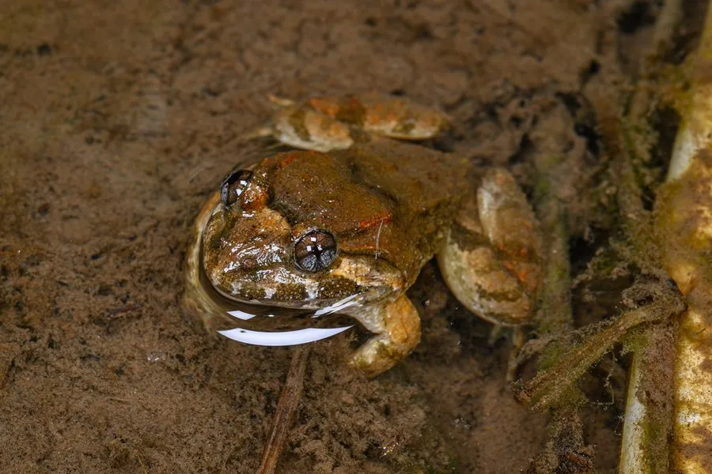

两栖动物 · 动物界
福建大头蛙 Limnonectes fujianensis

中国东南部的蛙类，头部特别大，雄蛙下颌有两枚齿状突起，常蹲在溪边石上，遇险时跳入水中躲藏。
- 分类
- 门脊索动物门纲两栖纲目无尾目科叉舌蛙科属大头蛙属
- 栖息环境
- 中国东南部山区的溪流、水潭、林下潮湿处与溪边石块
- 地理分布
- 中国福建、浙江、江西、湖南、广东、广西等东南部地区
- 保护级别
- IUCN 无危（LC）
物种志
福建大头蛙雄蛙体长 55–70 mm，雌蛙约 45–55 mm，头部明显宽大，雄蛙尤为突出。背部皮肤光滑或有细疣，体色黄褐至灰褐，常带深色斑纹，四肢有横纹，趾间蹼发达；雄蛙下颌前端有两枚骨质的齿状突起，用于争斗。
它们分布于中国福建、浙江、江西、湖南、广东、广西等地，栖息于海拔较低的山区溪流、水潭与林下潮湿处，常蹲在溪边石块或落叶上。福建大头蛙多在夜间活动，食物包括昆虫、螺类、小鱼和蛙类幼体。繁殖期在 5–8 月，卵产于溪边石块下或浅水处，蝌蚪生活在流速较缓的溪流中。雄蛙会守卫产卵场所，遇敌时鼓起身体、张大口部威慑对方。
形态与习性
- 食性昆虫、螺类、小鱼及蛙类幼体
- 体长雄蛙 55–70 mm，雌蛙 45–55 mm
- 繁殖5–8 月，卵产于溪边石块下
- 特征头部宽大，雄蛙下颌有两枚齿状突起
- 习性夜行性，雄蛙守卫产卵场所
- 分布中国东南部低山溪流
趣味知识
- 雄蛙下颌有两枚骨质的齿状突起，打斗时会用它们顶撞对手。
- 它的头特别大，雄蛙的头宽几乎与身体等宽，因此得名大头蛙。
- 蝌蚪生活在溪流中，尾部肌肉发达，能在流水中保持位置。